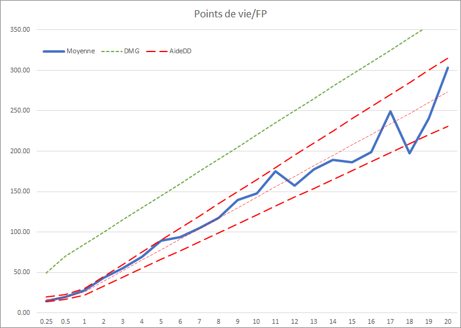
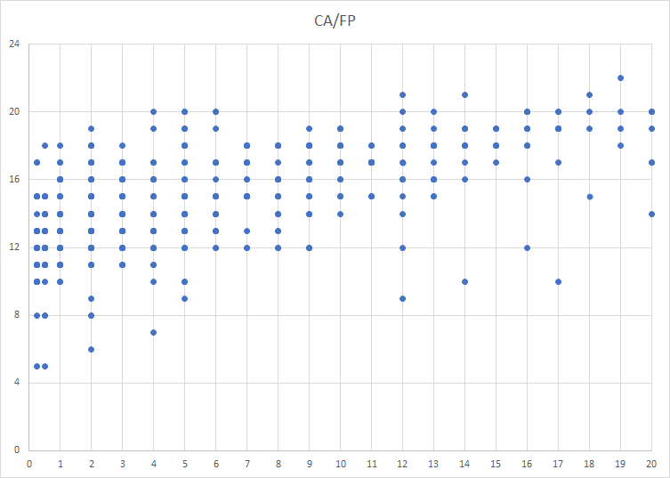
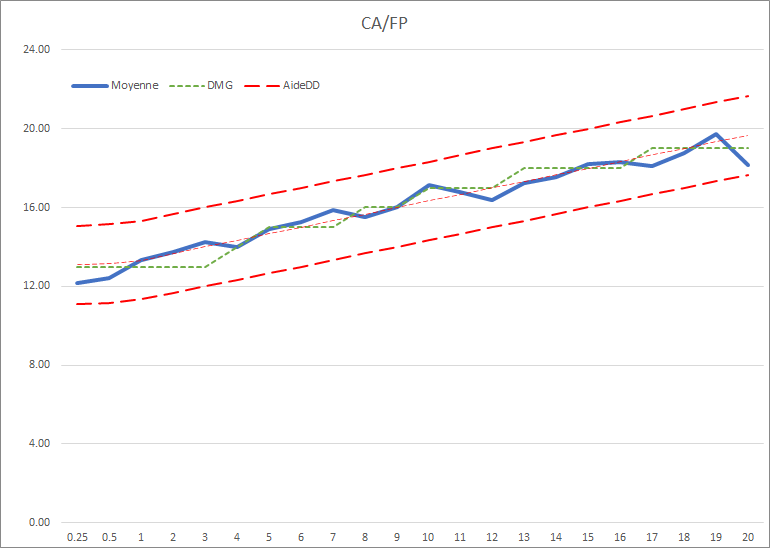

Créer un monstre
Si vous souhaitez créer vos propres monstres, le premier réflexe à avoir est de consulter le DMG page 273. On y trouve une table qui, en fonction du FP souhaité, donne une idée du bonus de maîtrise, de la CA et des pv. Sur beaucoup de forum on dit que cette table est « bugguée ». Mais elle est peut-être tout simplement mal expliquée.
Afin de vérifier cela, voici quelques statistiques basées sur l'ensemble des créatures du Monster Manual, du Monsters of the Multiverse et du Fizban's Treasury of Dragons. Wizards ayant lui-même admis que les stats du Volo's Guide to Monsters et du Mordenkainen's Tome of Foes ne sont pas correctes, autant les oublier et prendre la toute récente version corrigée du Monsters of the Multiverse. On parle donc ici de 615 créatures de FP 1/4 à 20.
Points de vie
Le premier graphique en nuage de points permet de voir la répartitions des points de vie moyens en fonction du FP. Mis à part l'Eidolon (FP 12 ) et la demi-liche (FP 18), c'est plus ou moins homogène.

Le deuxième graphique montre en bleu la moyenne des points de vie moyens de toutes ces créatures par FP (j'ai juste exclu la demi-liche et l'eidolon), avec comme référence la valeur indiquée par le DMG en vert. Alors oui, la courbe du DMG est bien supérieure, mais en fait, si l'on se réfère au nuage de points, au lieu d'indiquer les points de vie moyens, le DMG semble plutôt indiquer le maximum de points de vie moyens pour un FP donné.

Du coup, j'ai mis en rouge ce qui pourrait être la formule pour définir les points de vie moyens en fonction du FP, en se basant sur ces 615 créatures de D&D 5. Et cela donne :
points de vie moyens = (13 ± 2) x (FP + 1)
Classe d'armure
Voyons maintenant la CA en fonction du FP sous forme de nuage de points.

Dans ce cas la moyenne est plus facile à déterminer et elle colle bien avec la table du DMG.

Et donc en rouge ce qui pourrait être la formule pour définir la Classe d'armure en fonction du FP. Cela donne :
Classe d'armure moyenne = (13 ± 2) + (FP / 3)